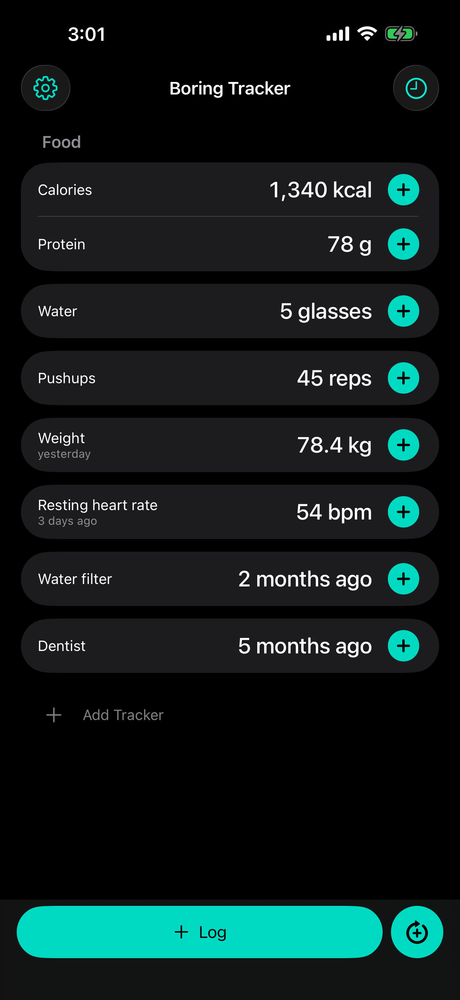
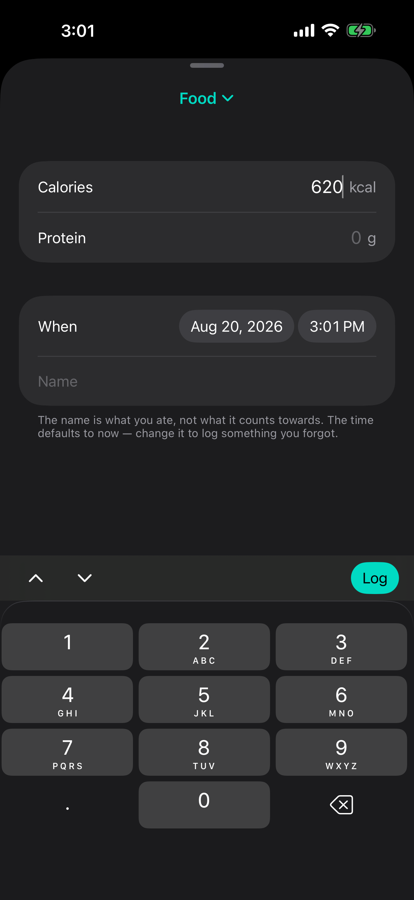
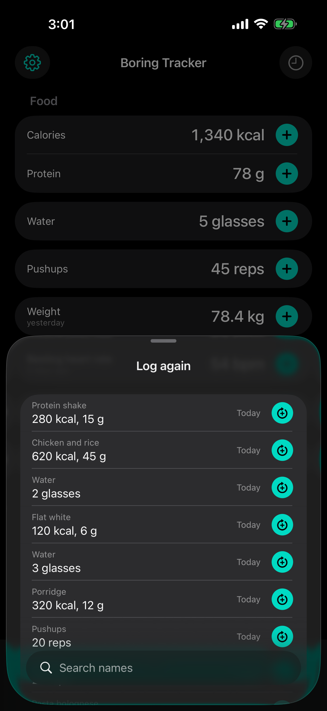
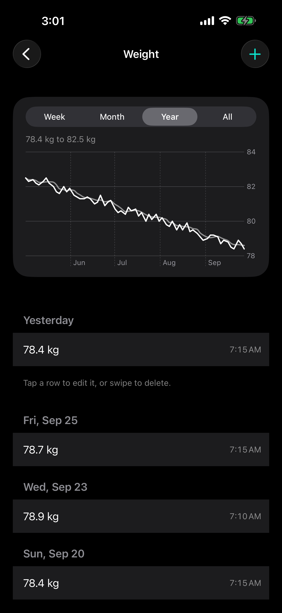

A number, a tracker, done.
Write down 600 calories, 40 protein and get on with your day. No food database to search, no barcode to scan, no account to make. Everything stays on your phone.
Free · iPhone and iPad · iOS 18 or later · Open source

The number pad is already up when the log sheet opens. Trackers you log together, like calories and protein, share one sheet. Anything you have logged before repeats with one tap.



Calories · protein · water · pushups
Entries add up through the day and reset at an hour you choose.
Weight · heart rate · your cat's weight
Single readings you follow over time on a graph.
Water filter · dentist · tyres
One tap records the date. The app shows how long it has been.
Name your own trackers and pick their units. Edit entries, log something for yesterday, export everything as JSON or CSV. There are no streaks, badges, reminders, or goals. Missing a day is fine.
These rules are written down in the repository as PHILOSOPHY.md, and the app is open source, so you can hold it to them.
Boring Tracker collects no data. The app has no networking code, so nothing you enter can leave your device unless you export it yourself. The full policy is short and plainly written: read the privacy policy.